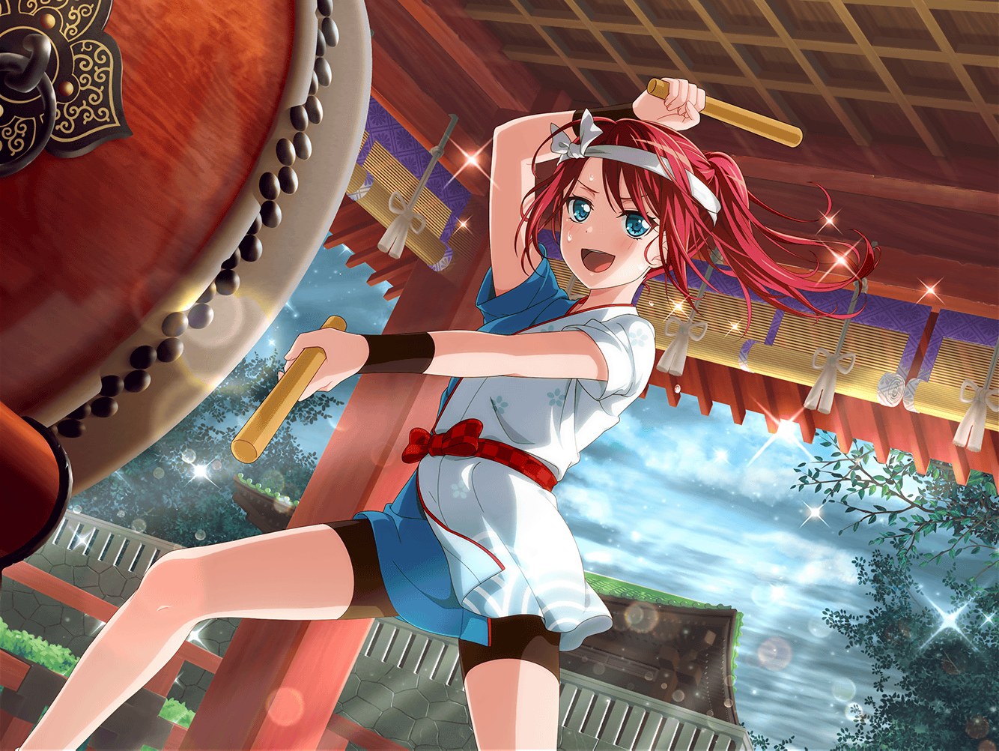

羽丘女子学園 屋上
巴
それでな！
お祭りの時、アタシ達の気合いの掛け声と和太鼓の響きで、
空がパーって晴れたんだよ！
蘭
えぇ……？
冗談でしょ、巴？ それ本気で言ってる？
モカ
トモちーん、さすがにそれはないよ～。
偶然だって、偶然
巴
いやいや！ あれは絶対に偶然じゃないって！
だって、それまで分厚い雲に覆われてた空が、
一気に晴れたんだぞ！？
蘭
たまたま、タイミングが合っただけじゃないの？
巴
みんなはあの場所にいなかったからそんなこと言えるんだって！
たまたま、とかそういうレベルの話じゃないから！
あれは絶対に間違いない！
モカ
トモちーん、熱くなりすぎじゃーん？
わかったわかった。トモちん達の気合いのおかげで空が晴れた。
トモちんがそう思うなら、それでいいと思うよ～
巴
モカ……
全然信じてないだろ……
ひまり
け、けど、そういうのってあるかもね！
何ていうか、空に想いが通じるっていうか！
モカ
ひーちゃん、また適当なこと言って～。
空に想いが通じるって……なに？
ひまり
それはえーっと……あれだよ。なんて言うか……
あ、ほらっ！ 信ずるものは救われる……的な？
つぐみ
そ、それがあってるかどうかはわからないけど……
確かに、昔から晴天祈願の儀式みたいなのってあるもんね。
たぶん、そういうことだよね？
ひまり
そう！ やっぱりつぐは、話がわかるな～。
私が言いたかったのは、そういうこと！
モカ
どお～、蘭？
蘭はわかった？
蘭
全然
巴
……ったく～。
蘭もモカも、あれを見たら一発でわかるんだけどな。
見せられないのがホントに残念だ
モカ
それじゃあトモちん、今やってよ～
巴
は？ だって今、雨なんて降ってないだろ？
ひまり
あ、それじゃあ、３日後はどう？
その日、テニス部の試合があるから晴れてほしいんだけど、
今のところ天気予報は雨になってるんだよね
巴
お、それいいな！
それじゃあ３日後にみんなで集まるか
モカ
え～、３日後って休みの日だよー。
わざわざそのために集まるの～？
蘭
あたしも絶対やだ
モカ
トモちん、今やってよ～。
トモちんならできるってー
巴
そこまで言われたんじゃ、こっちも引き下がれないな。
よし、それじゃあひまり！ 一緒にやるぞ！
ひまり
えっ！？ 私も！？
巴
当然だろ？ ひまりが３日後晴れてほしいって
言い出したんだから。
本人がやらないでどうするんだよ？
ひまり
た、確かにそう言われると、そうだね……
……え？ 気合いを入れるって、なんか掛け声あるんだっけ？
巴
もちろん！
掛け声はな～……
巴
ハッピー！ ラッキー！ ポピパパ！ ソイヤっ！！！
巴
この掛け声を叫べば、３日後の雨雲だって吹き飛ぶはずだ
ひまり
わ……
想像以上に恥ずかしい……
巴
この掛け声にはな……
３つのバンドの魂の言葉が入ってるんだ
つぐみ
た、魂の、言葉？
モカ
それだと、あたし達のバンドの魂の言葉が
『ソイヤ』になっちゃうけど～。
あたしはソイヤに全く思い入れないなー。蘭は？
蘭
あたしは、どっちかって言うと苦手
巴
よし！
それじゃあひまり、いくぞ！
ひまり
え！？
ホントに私もやるの！？
巴
当たり前だろ！？
３日後にアタシ達の気合い、届けようぜ！
ひまり
３日後に気合いを届けるって……
どういう意味？
巴
とにかくデカい声でってことだなっ！
モカ
あはは～。
ひーちゃん、頑張れー
巴
よし、いくぞひまり！
巴
ハッピー！ ラッキー！ ポピパパ！ ソイヤっ！！！
ひまり
は、ハッピー、ラッキー……ポピパパ、そ、ソイヤ……？
巴
声が小さいぞ、ひまり！
モカ
ひーちゃん、そんな声じゃ、３日後には届かないよー
巴
ひまり、喉から声を出すんじゃない！
腹から声を出すんだ！
巴
ハッピー！ ラッキー！ ポピパパ！ ソイヤっ！！！！
ひまり
もぉ～！
わかったよ！ やればいいんでしょ～っ！
ひまり
ハッピー！ ラッキー！ ポピパパ！ ソイヤっ！
巴
もうひと声！
ハッピー！ ラッキー！ ポピパパ！ ソイヤ〜〜っ！！！！！
ひまり
ハッピー！ ラッキー！ ポピパパ！ ソイヤっ！！！
モカ
ねー、蘭……
トモちんって前からあんなだったっけ……？
蘭
こころと香澄の影響を、モロに受けたかもね……
巴
段々良くなってきたぞ、ひまり！
もういっちょーっ！